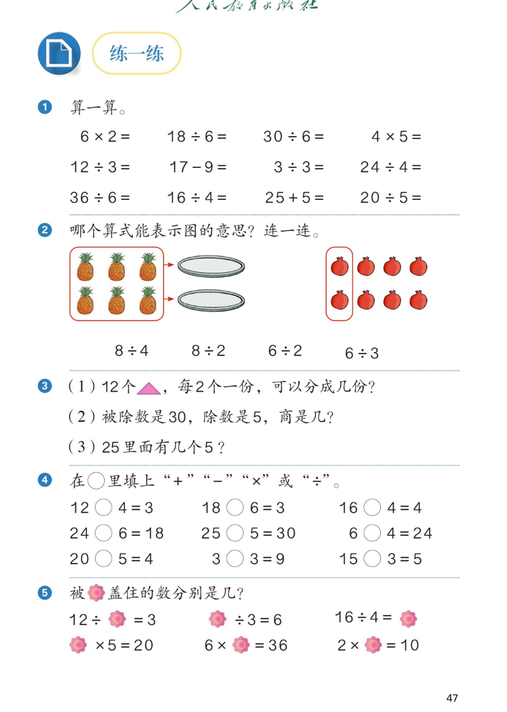

🔊 1~6的表内除法 · 课本第 47 页 · 练一练 1~5
人教版《数学》二年级上册 · 有声图文带读 · 先想后看解析
题数
6
认知
2
强化
3
拓展
1
本页重点
口算 · 图意连线 · 填运算符号 · 求被盖住的数
🎧 分两步学：
① 解析教材图片
——纯声音读图，读到哪一块哪一块闪动提示；关键处先倒计时让你思考，再在图片下方给出解析并朗读。
② 分层提问练习
——六道分层题（认知 / 强化 / 拓展），先思考再展开解析、朗读参考答案；这一步不再回到图片。
也可以随时点任意一句话、图上任意一块单独听；点课本文字卡还会展开答案。
教材图片（点块听读，读到哪块哪块闪）

📖 人教版《数学》二年级上册 · 课本第 47 页 · 图片仅供个人学习，版权归人民教育出版社所有
🤔 想一想（点我可跳过）
课本的文字（点句子：听读 + 看答案）
第 1 题
口算 12 道全答案
看答案 ▾
第一行：
6×2＝12
、
18÷6＝3
、
30÷6＝5
、
4×5＝20
；
第二行：
12÷3＝4
、17−9＝8、
3÷3＝1
、
24÷4＝6
；
第三行：
36÷6＝6
、
16÷4＝4
、25＋5＝30、
20÷5＝4
。
第 2 题
菠萝连 6÷2 · 石榴连 8÷2
看答案 ▾
左图：
6 个菠萝
红框整体平均装到
2 个盘子
里 →
6÷2＝3
（每盘 3 个）；
右图：
8 个石榴
，红框已把
2 个圈成一份
→
8÷2＝4
（分成 4 份）。
🌈 先看清图是"平均分"还是"包含分"，再选算式
第 3 题
三问：12÷2 · 30÷5 · 25÷5
看答案 ▾
(1)
12÷2＝6（份）
；
(2) 被除数 30、除数 5 →
30÷5＝6
，商是 6；
(3)
25÷5＝5
，25 里面有 5 个 5。
第 4、5 题
填符号 + 花盖住的数
看答案 ▾
第 4 题：
12÷4
、
18÷6
、
16÷4
、24
−
6、25
＋
5、6
×
4、
20÷5
、3
×
3、
15÷3
；
第 5 题：12÷
4
＝3、
18
÷3＝6、16÷4＝
4
、
4
×5＝20、6×
6
＝36、2×
5
＝10。
分层提问练习（先想后看解析）
🧮
认知
口算：18÷6、30÷6、12÷3、24÷4，各得几？用什么口诀？
看解析
🤔 想一想
解析：
18÷6＝3
（三六十八）、
30÷6＝5
（五六三十）；
12÷3＝4
（三四十二）、
24÷4＝6
（四六二十四）。
🔺
认知
12 个 △，每 2 个一份，可以分成几份？
看解析
🤔 想一想
解析：
12÷2＝6（份）
；
想口诀：
二六十二
。
🍍
强化
菠萝图为什么连 6÷2 而不是 6÷3？
看解析
🤔 想一想
解析：
红框把
6 个菠萝
平均装到
2 个盘子
里 → 平均分成 2 份 →
6÷2＝3
；
6÷3 的意思是
每 3 个一份
，但图上没有每 3 个圈的标记。
💡 看图先找"分成几份"或"每份几个"的标记
✏️
强化
第 4 题填运算符号，有什么快速判断的方法？
看解析
🤔 想一想
解析：
得数
变小
：试减法或除法——先用口诀试除法，如 12÷4＝3；
得数
变大
：试加法或乘法——25＋5＝30、6×4＝24；
💡 用得数大小缩小范围，再用口诀确认
🔍
强化
"被除数 30、除数 5，商是几"和"25 里面有几个 5"，两问有什么相同？
看解析
🤔 想一想
解析：
30÷5＝6
、
25÷5＝5
；
相同：都在求
一个数里有几个另一个数
（包含分），都用除法。
💡 说法不同，除法本质相同
🌈
拓展
求花盖住的数，用的什么好方法？总结一下。
看解析
🤔 想一想
解析：
逆推法
：12÷（ ）＝3，想"三（ ）十二"→ 4；
（ ）÷3＝6，想"三六（ ）"→ 18；（ ）×5＝20，想"四（ ）二十"→ 4。
🌈 花盖数不用怕，口诀倒着想
① 解析教材图片
② 分层提问练习
⏹ 停止
纯声音 + 高亮跟随 · 想好才出解析
← 返回导航